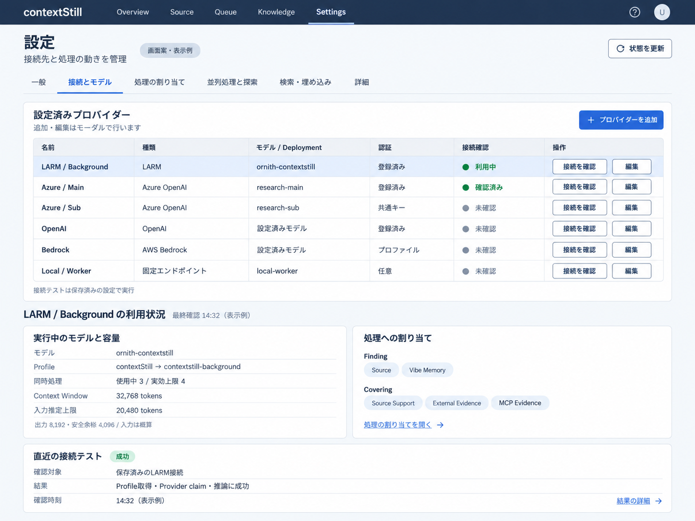
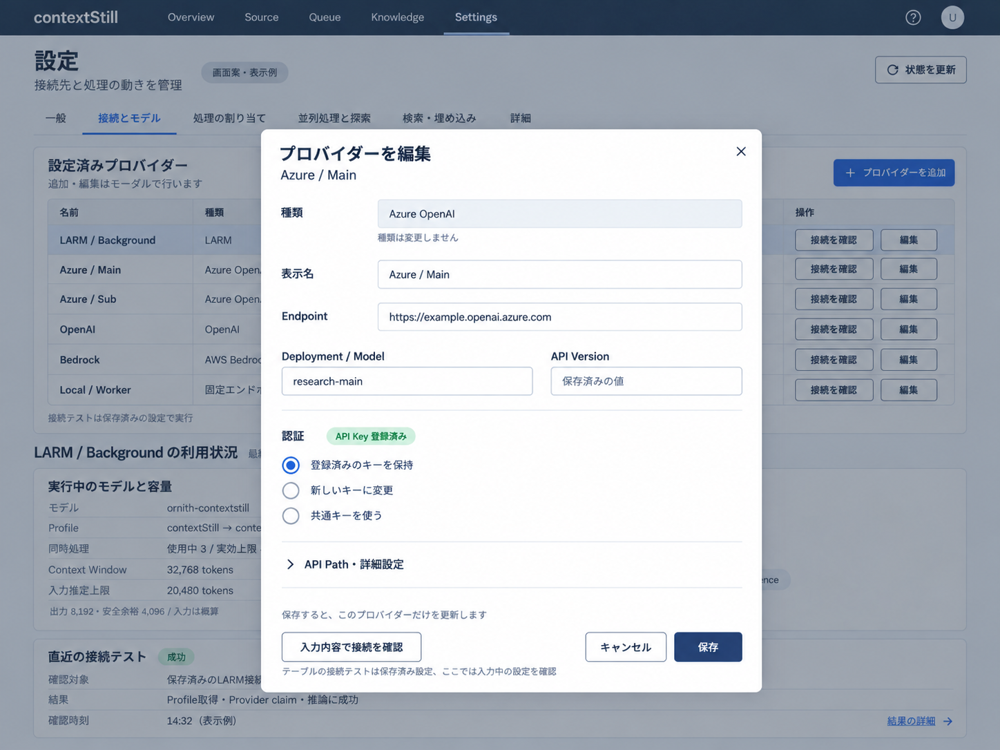

2026年10月4日。状態：実装完了。ユーザーが採用したプロバイダー一覧・登録更新モーダル・行ごとの接続テスト・テーブル下の参照情報を実装し、既存の設定機能を移した後に旧画面を削除する。計画に沿う製品コードと隔離検証を完了した。稼働中の設定・Queueは変更していない。
画面の正本はLARM・Agentic処理に合わせた設定画面の見直し案の第3案。本書はその実装順序、保存契約、移行、削除対象、検証と完了条件を定める。画像に含まれる状態・URL・モデルは表示例であり、初期設定として保存しない。


既存の設定データ、利用中の認証、Queueの実行契約は保持する。LARMモデル・配備・物理KVキャッシュの変更や他のリポジトリの変更は範囲に含めない。探索予算は現在の共通ポリシーの参照表示とし、予算自体を編集可能にする変更はこの計画に含めない。
settings-form.tsがadvancedを作り直すとagentRuntimeが欠落する。追加項目を保持する保存契約を先に用意する。
saveRuntimeSettingsは設定全体を置換し、ドキュメントのexpectedVersionを指定していない。別画面・別タブの古いsnapshotをそのまま保存させない。
use-settings-controller.tsxは再取得時にdraftとsecretDraftsを初期化する。状態更新とフォーム初期化を分離する。
larm-status.tsは最初の接続だけを見て別のローカルhealthを代用する。採用済みConnectionとProviderごとの状態を表示する新しい読取契約へ移す。
| 工程 | 作業 | 完了条件 |
|---|---|---|
| 1. 保存契約・移行 | 共通型、行ID、差分保存、revision検証、認証の準備と確定、既存設定の移行を実装する。 | 既存設定を読み書きして新しい項目が欠落せず、個別保存と他タブ保存が相互に上書きしない。 |
| 2. 観測・接続テスト | 登録一覧、Connection別状態、ポリシー参照、保存済み／draftの接続テストAPIを用意する。 | 観測だけでConnection・推論を発生させず、指定した1行を正しく検証できる。 |
| 3. 一覧・モーダル | 新しい設定shell、プロバイダー表、登録更新モーダル、下部3領域、状態表示を実装する。 | 各種類の登録・編集・保存・テスト・削除と、選択／空状態／キーボード操作が動作する。 |
| 4. 他タブの移行 | 独立した割り当て、Pool、探索、DeepStill、一般、検索、Embedding、詳細へ既存機能を移す。 | 全既存項目の移行先または互換読取理由が確定し、旧パネルを使わず操作できる。 |
| 5. 切替・レガシー削除 | 新画面へ入口を切り替え、旧UI・旧変換・不要な依存・スタイル・テストを削除する。 | 旧UI実装へのimportと実行経路が0件。旧URLは新画面への転送だけを残す。 |
| 6. 通し検証・完了 | 競合・認証・容量・移行の回帰検証、隔離E2E、画面確認、build・境界検査を行う。 | 旧UI削除を含む全受け入れ条件を満たし、残課題を必須工程の後回しとして残さない。 |
工程1→2→3→4→5→6で進める。途中で旧画面を参照することはできるが、旧画面を恒久的に選べる切替や旧画面へのfallbackは追加しない。切替と削除は同じ実装対応の完了範囲に含める。
ブラウザーから使える純粋な共通契約をsrc/modules/settings/に分離する。DB、環境変数、secret取得処理はそのモジュールに含めない。フロントエンドの手書き設定DTOを共通型へ置き換え、バックエンドの解析・保存・画面フォームが同じ項目と制約を使う。Rust側は同じfixtureによる互換テストを持つ。
| モデル | 必須情報 | 扱い |
|---|---|---|
| 設定済み接続 | 安定ID、種類、表示名、モデル／Deployment、登録状態、有効状態の適用範囲、認証状態、参照先。 | 既存runtime設定から導出する。LARM公開カタログとは別の登録一覧。 |
| 保存差分 | 変更対象、expectedRevision、変更項目、認証操作、operation ID。 | サーバーで最新設定に適用し、全体検証とCASで確定。未編集項目は維持。 |
| 観測 | 対象ID、observedAt、対応revision、採用Connection、Provider、実効容量、期限、状態と原因。 | 参照用。編集値と分離し、古い観測を最新状態へ流用しない。 |
| 接続テスト | test ID、保存済み／draft区分、対象IDとrevision、確認方式、開始・終了時刻、status、結果と原因。 | idle、queued、running、success、failed、cancelled、staleを区別。到達性と推論成功も分ける。 |
| 探索ポリシー | policy revision、Window計算条件、出力予約、総予算、最終確認予約、回数と停止条件、推定方式。 | native側の実装を情報源にする。画面に別のハードコードを持たない。 |
認証は保持・変更・共通キー継承・環境変数利用・明示解除を種類ごとに表現する。対応しない操作は表示しない。secret本文、短期Provider token、認証入りURLは読取APIとテスト結果へ含めない。
新UIは接続モーダルから対象だけを保存する。他タブも許可した設定範囲の差分だけを保存し、保存済みProviderを丸ごと含む古いsnapshotを送らない。編集を始めたrevisionと変更前値を保持し、競合はHTTP 409として返す。無関係な変更は再取得した設定へ差分を再適用できるが、同じ項目の競合は自動上書きしない。
SQLite・PostgreSQL双方の現行サポートを維持する。CASは既存行の更新だけでなく初回作成でも適用する。operation IDは対象とrequest digestに結び付け、再送で重複登録しない。OSストアとDBが分散していることを前提とし、平文を含まないoperation記録とGCで復旧する。secretは変更された値だけを処理し、一覧取得で認証を解除しない。
既存PUT /api/settingsは新UIから使わない。残る呼び出し元を調べ、revision付き差分操作へ移す。旧全置換を許可したまま新モーダルだけCASにしても上書き事故を防げないため、新画面への切替時には既存PUTもrevision検証と互換変換を通す。最終的に必要な外部呼び出し元がなければ旧全置換の入口を削除する。
以下は追加する契約であり、現時点で実装済みのAPIではない。api/modules/settings/settings.routes.tsに統合し、既存の管理認証とservice／repository境界を使う。設定読み取りとruntime観測は別の更新周期を持てるようにする。
| 操作 | API案 | 主な条件 |
|---|---|---|
| 登録一覧 | GET /api/settings/provider-connections | 登録済み設定と参照先、認証状態。接続作成・推論はしない。 |
| 新規登録 | POST /api/settings/provider-connections | 種類別入力、expectedRevision、operation ID。成功時に永続IDとrevisionを返す。 |
| 更新・削除 | PATCH／DELETE /api/settings/provider-connections/:id | 対象をIDで解決し、参照影響、secret操作、競合を検証する。 |
| 他タブ保存 | PATCH /api/settings | 許可したsectionまたはrouteの差分。providersを他タブのsnapshotで上書きできない。 |
| runtime状態 | GET /api/settings/provider-connections/:id/runtime | 採用Connection・Provider・capacity・期限・観測時刻。情報不足を未確認とする。 |
| 探索ポリシー | GET /api/settings/agent-policy | 実装に対応する参照値とpolicy revision。DeepStill設定値の読取とは分ける。 |
| 保存済み接続テスト | POST /api/settings/provider-connections/:id/tests | 保存revisionを指定。202とtest IDを返し、対象の同時二重実行を防ぐ。 |
| 入力中の接続テスト | POST /api/settings/provider-tests | 種類別draftと認証操作。未編集の認証は対象IDから解決。draftを保存しない。 |
| 結果・取消・再送確認 | GET／DELETE /api/settings/provider-tests/:testId、GET /api/settings/operations/:operationId | 有限のTTLと件数で保持。取消で通常Connectionを解放しない。結果にsecretを含めない。 |
旧種別単位・Azure slot単位・モデル名単位のテストAPIは呼び出し元を調べ、新UIはID指定へ統一する。必要な互換入口は同じ実装を呼ぶ薄いadapterだけにし、独立したテスト処理を二重に保守しない。設定画面から使われなくなっても他機能が使うProvider factoryやhealthCheck自体は削除しない。
新しいsettings-workspace.tsxを入口に、用途ごとの小さなcontrollerとcomponentへ分割する。現在のuse-settings-controller.tsxの巨大なPropsを各パネルへ展開する構成は引き継がない。settings.page.tsxは新入口のexportだけにできる。
| 部品 | 責務 |
|---|---|
| 設定shell・URL変換 | 6タブ、取得エラー、他タブの未保存変更。接続タブに全体保存ボタンを出さない。 |
| ProviderConnectionsTable | 登録一覧、安定IDによる選択、行のテスト・編集、種類別状態、登録0件。ボタンのイベントと行選択を分離する。 |
| ProviderConnectionDialog | 新規・更新の共通フォーム、種類別field schema、認証操作、draftテスト、検証、個別保存。保存成功後に対象行を選択。 |
| 共通Dialog primitive | Portal、label／description、focus管理、Esc、閉じた後のfocus復帰、背景操作の抑制。現行ui部品にDialogがないため共通部品を追加する。 |
| ProviderRuntimeDetails | 利用状況、処理への割り当て、直近テスト結果。参照専用で、未確認・古い結果・CloudとLARMの違いを表示する。 |
| 独立route editor | 各routeの型と対応する実行先だけを編集。一括適用は対象と差分を表示する明示操作。 |
| 探索・Pool・その他section editor | 範囲を限定した差分保存。実際の適用先とreadonly policyを区別する。 |
データ再取得でモーダルの入力を初期化しない。取消・失敗では入力と選択を保持し、保存成功時だけ必要なqueryを更新する。秘密値のdraftはモーダル内に限定し、閉じた後に保持し続けない。削除は補助メニューまたは別セクションに置き、参照先を明示する。画面には内部operation IDやleaseの識別情報を通常表示しない。
| 既存機能 | 新しい移行先 | 条件 |
|---|---|---|
| Provider Endpoints・Codex Auth | 接続とモデルの表・モーダル | 全種類、認証保持・変更・環境変数取得元、共通キー継承を維持。 |
| LLM Pool | 並列処理と探索の固定Provider Pool | 候補・順序・maxConcurrent・aging・stale lease・有効状態・診断を維持。LARM4枠とは別の概念として表示。 |
| Task Routing | 処理の割り当て | 全task routeを保持。Finding source／vibe、Covering sourceSupport／externalEvidence／mcpEvidenceを独立編集。 |
| Finding・Covering runtime | 並列処理と探索、必要な互換設定は詳細 | 各項目の実行側利用を一覧化。Agenticで効かない旧項目をAgenticの設定として出さない。現役経路の制約は維持。 |
| AgentRuntime・DeepStill | 並列処理と探索 | enabled・research・専用認証参照を保存。自動委譲と手動Researchのrouteを分離。measurementは編集項目に復活させない。 |
| Search・Embedding／Local Runtime | 検索・埋め込み | サービス順序・検索予算・認証・Embedding実接続・モデル・dimension・無効化の意味を保持。 |
| General | 一般 | 対象優先順など既存項目を移し、無関係な値を保存差分に含めない。 |
| Advanced・Runtime Cache | 詳細 | Queue間隔・lock・診断・ログsync等を維持。API cacheとresident採用の違いを表示。 |
工程1で全設定項目の移行manifestを作り、「編集可能」「実装policyの参照値」「互換読取のみ」「未使用で削除」のいずれかに割り当てる。manifestには保存先・利用コード・移行先・削除条件を記録する。現役の項目を旧画面と一緒に削除しない。
Finding・Coveringの現在の要求上限はmin(Provider Window, 32,768)、出力8,192、安全余裕はmax(Provider余裕, 4,096)。現在の例では入力概算許容量20,480。通常探索は目標98,304／hard131,072、LLM最大8回、最終確認予約32,768。DeepStill委譲を含む場合は目標262,144／hard393,216へ切り替える。これらを同じ「トークン上限」入力欄にまとめない。
入力の概算はJSONのUTF-8 byte数とmessage framing余裕による推定で、実tokenizer計測ではない。Windowの概算予約、実応答usage、cached input、1件の総使用量を区別する。内部HARD_WINDOW36,864を利用可能な上限として表示しない。nativeの実装値を返し、画面と実行側の別定数を撤去する。
同時処理はConsumer上限1〜4、LARM公表上限、実効上限、使用中permitを分ける。容量省略時は1。異なるQueue優先、空き枠でFinding／Covering並列、DeepStillも共有する現在の方針を参照表示する。停止条件はno gain2回、取得失敗3回、予算目標または探索呼び出し6回で最終確認へ移行。設定画面の切替でこの実行方針を変更しない。
以下の旧実装は機能移行・テスト完了後に削除する。旧UIを未使用のまま残す、別URLで残す、設定flagでいつでも戻せる状態にすることを完了とはしない。
| 旧実装 | 対応 | 削除条件 |
|---|---|---|
settings/settings-page.tsx |
新settings workspaceへ入口を変更して削除。 | 6タブの新shellとURL移行が完成。旧パネルをrenderしない。 |
use-settings-controller.tsx、settings-form.ts
|
個別controller・共通契約・差分保存へ置換して削除。 | 各import元を移行。全設定コピー、旧secret draft、旧prepareSettingsForSaveが新画面へ残らない。 |
provider-endpoints-panel.tsx |
Provider表・モーダル・参照詳細へ置換して削除。 | 全Provider種類と認証・テスト・削除機能が新画面で動く。 |
task-routing-settings-panel.tsx |
独立route editorへ置換して削除。 | 全route、対応可能な実行先、一括適用、runtime項目の移行が完了。 |
local-llm-pools.tsx |
新並列処理タブのPool editorへ置換して削除。 | Poolの全現役項目と参照・診断を移行。 |
general-settings-panel.tsx、search-settings-panel.tsx、embedding-settings-panel.tsx、advanced-settings-panel.tsx
|
移行表に沿うsection editorへ置換して旧パネルを削除。 | 移行manifestの現役項目がすべて編集または参照可能。 |
settings-controls.tsx、settings-routing.ts、settings-primitives.ts
|
必要な純粋関数・小部品だけを新構成へ抽出し、旧UI専用の残りを削除。 | 他画面の利用も検索し、旧tab型・providerPoolIdだけのpreview・旧kind変換が残らない。 |
フロントのsettings-contracts.ts内の重複設定型、旧API client |
共通契約のexportと新API clientへ置換。 | 手書きDTOの二重定義と、旧全置換・slot／モデル名指定の新UI呼び出しが0件。 |
web/src/styles.cssの旧settings専用class |
新部品に必要な共通styleへ整理し、未使用selectorを削除。 | 使用箇所を検索し、他画面で使うstyleを誤って削除しない。 |
旧UI専用のsettings-page.test.tsx、settings-panels.test.tsx
|
必要な動作保証を新画面のテストへ移し、旧マークアップ前提のテストを削除。 | 認証、競合、Pool、route、URL互換の保証は残す。失敗を隠すためにテストだけを削除しない。 |
ファイル名はweb/src/modules/admin/components/settings/を基準にしている。旧APIのhealth
serviceやruntime settings
repositoryはUIだけのレガシーとはみなさない。参照があるBackend・native処理は維持し、必要な変更だけを共通契約に合わせる。
新しい正規URLを/setting/general、/setting/connections、/setting/assignments、/setting/execution、/setting/retrieval、/setting/advancedとする。既存/setting/llmproviderはconnections、llmpoolはexecutionのPool、taskroutingとdistillation-runtimeはassignments、searchとembeddingはretrievalの該当sectionへ転送する。/settings/*も同じ対応表で転送する。
互換URLは新画面へのredirectだけを残す。web/src/App.tsxのsection集合とrouter、設定tab解決、画面内リンク、ナビゲーション、テストを同時に更新する。未知のsectionは新しい既定タブへ転送する。過去のURLを受け付けるために旧画面コードを残さない。
| 層 | 確認する具体的な失敗 | 主な対象 |
|---|---|---|
| 契約・移行 | agentRuntime欠落、ID再生成、Azure削除時のroute／secretずれ、Pool順序変更、旧JSON再移行で差分が増える。 | 共通契約fixture、settings defaults、repository・runtime cacheテスト、native読取テスト。 |
| 保存・認証 | 別タブ・2クライアントの競合、初回作成の重複、空キー入力の解除、OSストア失敗、DB commit不明、GCによる採用済み参照削除。 | settings API／service、secret-store、SQLite writer・PostgreSQL repositoryの必要なtransaction検証。 |
| 接続テスト | 別行／別Deploymentの成功を採用、draftによる保存値変更、401や429を成功に表示、更新中の旧結果適用、タイムアウト後の二重実行。 | API test runner、Provider factory adapter、結果の保存revision binding。 |
| LARM・permit | catalog公開だけで利用中表示、Provider3件を自動要求、容量省略の4枠扱い、テスト5本目送信、cancelで通常Connection解放、410復旧中の古い表示。 | native Provider manager、lease／permit、共通HTTP fixture。実機依存なしで基本検証。 |
| UI | 再取得で入力消去、行ボタンの対象ずれ、キャンセル時の保存、モーダル外へのfocus、選択削除後の古い詳細、二重保存、独立routeの同時上書き。 | 新しいcomponent・controller tests。旧UI専用テストから重要な保証を移す。 |
| 隔離E2E | 登録→テスト→更新→再読込、Provider保存後に他タブを保存、各route変更、Pool操作、旧URL転送、Queue稼働中の観測、狭い画面とキーボード操作。 | 既存Playwright隔離サーバーにsettings用specを追加。専用DB・fixture認証・模擬Cloud／LARMを使う。 |
| 削除・build | 旧import・CSS・routerが残る、重複DTO、新shellが旧controllerを呼ぶ、nativeとAPIのboundaryが崩れる。 | 参照検索、型検査、build、lint、境界・writer ownership検査、Spec検査。 |
関連テストから実行し、変更領域の検証後に型検査・build・必要な境界検査を行う。nativeを変更した場合は関連RustテストとClippyも実施する。E2Eは既存の隔離runtimeを使い、稼働中Queueや実登録のAPI Keyをfixtureにしない。計画書作成段階ではこれらのコードテストを実行済みとは扱わない。
実LARMの確認が必要な場合はContextStillの公開API操作の範囲で観測と明示的な有限試験を行い、作成した試験Connectionを解放する。サーバー改変・SSH・他リポジトリの作業を検証手順に含めない。Cloud実接続は設定済み接続の明示的なテストとして扱い、E2Eの必須条件にしない。
旧UIを説明する文書と置換済みの実装計画は、実装完了時に参照を整理してspec/docs/.archivedへ移す。採用した設計書は実装との差分と確認結果を反映し、現行画面のcontractとして参照できる形に更新する。
画面を追加しただけ、モーダル保存が旧全置換のまま、旧画面削除が別途課題のままでは完了としない。各工程の実装・確認は完了した。最終契約と検証範囲は現行の設定画面contractを参照する。
実装契約と完了記録に最終の保存方式、移行manifest、検証結果を記録した。
web/src/App.tsx、web/src/modules/admin/components/settings.page.tsx、web/src/modules/admin/components/settings/：入口、旧画面、置換対象。
web/src/modules/admin/repositories/admin/settings-contracts.ts、settings-api.ts、admin.repository.ts：共通DTO・新APIへの移行。
api/modules/settings/settings.routes.ts、settings.service.ts、api/modules/queue/larm-status.ts：保存・テスト・観測。
src/modules/settings/settings.types.ts、settings.defaults.ts、settings.service.ts、settings.repository.ts、settings.repository.sqlite.ts、settings-secret.service.ts：型、移行、CAS、認証確定。
src/modules/llm/providers/：到達性と推論テストのadapter。既存factoryを共通利用する。
crates/context-stilld/src/domains/provider_connection/、queue_lifecycle/provider_lease.rs、agent_runtime/、sqlite_writer/、secret_store/：管理器、permit、実装policy、単一writerとOS認証ストア。
test/app-settings-routes.test.ts、settings-runtime-cache.test.ts、settings.repository.sqlite.test.ts、settings-secret-store.bun.ts、test/components/admin/、e2e/：既存保証と追加検証。